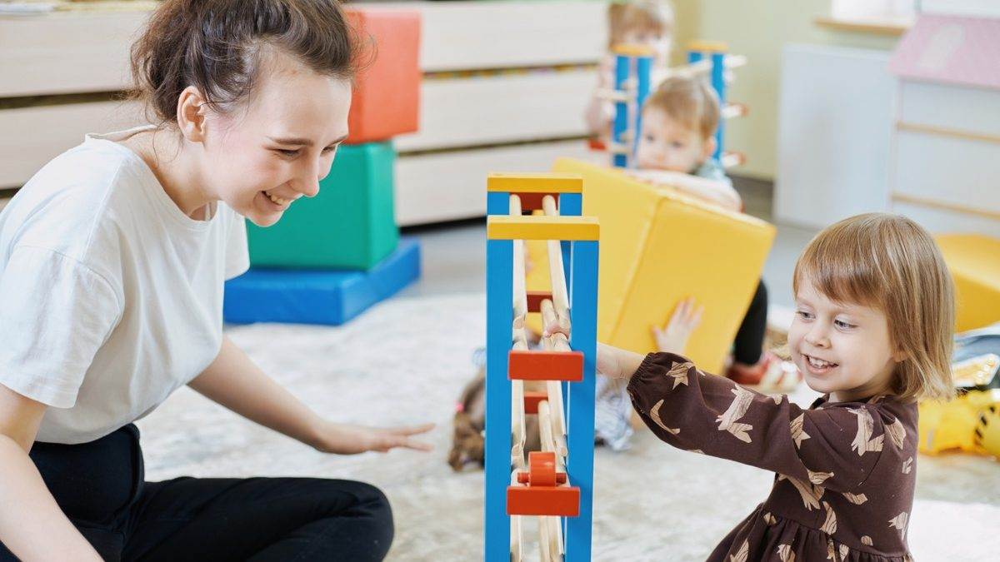

С какого возраста отдавать ребёнка в частный детский сад
 Власова Ольга ЕвгеньевнаУчитель изобразительного искусства, руководитель творческой мастерской.
Власова Ольга ЕвгеньевнаУчитель изобразительного искусства, руководитель творческой мастерской.

Родители спрашивают об этом на каждой экскурсии. Ответ короткий: оптимальный возраст три года, а при готовности ребёнка два с половиной. Ниже объясняем, откуда взялась эта цифра, по каким признакам понять, что ребёнок готов, и зачем вообще отдавать ребёнка в сад, если дома есть кому с ним сидеть.
- Оптимальный возраст для сада: три года. При хорошей готовности можно с двух с половиной.
- Главные признаки готовности: ребёнок ходит и лазает уверенно, понимает речь и говорит о своих желаниях, интересуется другими детьми, засыпает днём без груди.
- Сад даёт то, чего дома не собрать: режим, пространство для движения, новые впечатления, круг общения и пищевые привычки.
Почему три года
К трём годам ребёнок подходит к саду с пятью готовыми опорами. Каждая из них снимает по одной причине слёз в раздевалке.
- Выше адаптационный потенциал. Ребёнок готов отделяться от мамы на несколько часов и не воспринимает это как потерю.
- Речь позволяет сообщить о желаниях. Он может сказать, что хочет пить, что устал или что ему не нравится игра. Воспитателю не нужно угадывать.
- Появляется интерес к совместной деятельности. Дети в этом возрасте начинают играть вместе, до этого они играют рядом. Группа становится для него ценностью.
- Ребёнок уверенно сидит за столом. Значит, ему доступны рисование, лепка, работа с материалами. Это основа всех занятий в саду.
- Навыки самообслуживания частично сформированы. Их легко закрепить на примере сверстников: когда все сами надевают сандалии, ребёнок делает так же.
Можно ли раньше: два с половиной года
Можно, если ребёнок готов. Возраст в паспорте здесь значит меньше, чем то, что он умеет. Перед тем как отдавать ребёнка в сад в два с половиной, проверьте пять показателей.
Крупная моторика
Ребёнок ходит самостоятельно, перешагивает небольшие препятствия, поднимается и спускается по лестнице приставным шагом, держась за перила или за руку взрослого. Садится на стульчик и слезает с него без помощи. Прыгает на двух ножках.
Понимание речи и умение выразить желание
Ребёнок понимает то, что ему говорят, и может словами сказать о своих потребностях. Не обязательно предложениями, достаточно отдельных слов: «пить», «домой», «не хочу».
Интерес к другим людям
Ребёнок интересуется детьми и взрослыми кроме мамы и уже имеет опыт общения с другими людьми: с бабушкой, няней, детьми на площадке.
Дневной сон без грудного вскармливания
Ребёнок укладывается на дневной сон без груди. Это критичный пункт: в саду его никто не сможет уложить так, как это делает мама.
Любознательность
Ребёнок проявляет интерес к окружающему миру, тянется к новым предметам, задаёт вопросы или показывает пальцем на всё подряд. Это признак того, что новая среда его увлечёт.
Зачем отдавать в сад, если дома есть бабушка или няня
Этот вопрос задают чаще, чем вопрос о возрасте. Ниже пять причин, по которым родители выбирают частный сад даже при наличии помощи дома.
Режим без давления
Родителям нужен чёткий распорядок дня, но без муштры и с индивидуальным подходом. Режим частного детского сада помогает нормализовать биоритмы, научиться переключаться между видами деятельности, развить самодисциплину и организованность. Дома выстроить такой ритм сложно: всегда найдётся причина сдвинуть сон или пропустить прогулку.
Движение и пространство
В частном детском саду ребёнок активно развивается физически и лучше ориентируется в пространстве. Для этого есть оборудованные площадки для прогулок и просторные залы для подвижных игр и физкультуры. Освоение новых пространств, групп, залов, коридоров развивает координацию, ловкость и пространственное мышление. Квартира такого объёма движения не даёт.
Сенсорный и эмоциональный опыт
В саду больше возможностей обогатить впечатления ребёнка: разнообразные занятия, спектакли, концерты, праздники. Всё это стимулирует развитие и помогает ребёнку лучше понимать свои ощущения и выражать чувства.
Круг общения
Ребёнок готов расширять круг общения, и в безопасной среде сада он учится взаимодействовать с разными взрослыми и детьми, преодолевать небольшие трудности без мамы. Так формируется гибкость мышления и умение справляться с эмоциями.
Здоровые пищевые привычки
В частном саду сбалансированное и разнообразное питание. Дети пробуют новые блюда, глядя на сверстников: то, от чего ребёнок отказывается дома, в группе он съедает за компанию. Формируется здоровое отношение к еде без гаджетов во время приёма пищи.
В наши сады принимаем с полутора лет. В младших группах работает Монтессори-среда: материалы стоят на низких полках, ребёнок сам выбирает занятие, воспитатель помогает, когда это нужно. Английский звучит в группе каждый день, с первого месяца. Три кампуса: ЖК «Хорошёвский», ЖК «Мосфильмовский» в Раменках и БЦ «Дукат» у метро Маяковская.
Что делать, если ребёнку два года и он ещё не готов
Не торопиться. Год дома с правильной подготовкой даст больше, чем ранний сад со слезами. Что можно сделать за это время:
- Ввести режим дня, близкий к садовскому: подъём, завтрак, прогулка, обед, сон в одно и то же время.
- Приучить к самостоятельной еде и питью из чашки.
- Оставлять ребёнка с другими взрослыми на час-два, чтобы он привык: мама уходит и возвращается.
- Водить на площадки и в развивающие группы, где есть другие дети.
- Постепенно отучать от груди на дневной сон.
Когда все пять признаков готовности появятся, приходите на экскурсию. Педагог посмотрит на ребёнка в среде группы и скажет честно, пора или стоит подождать.
Частые вопросы
Можно, если у сада есть ясельная группа и ребёнок уверенно ходит, ест с ложки и спокойно остаётся с чужими взрослыми. В ONE! ясельные группы работают с полутора лет, но каждого ребёнка смотрим отдельно.
Нет. Три-четыре года хороший возраст для старта: ребёнок готов к группе, речь развита, адаптация проходит быстрее.
Отдельные слова и понимание речи важнее полных предложений. Если ребёнок понимает просьбы и может показать, чего хочет, этого достаточно.
От двух недель до двух месяцев. Подробно разобрали в статье про адаптацию к детскому саду.
Что дальше
Запишитесь на экскурсию в ближайший к вам сад ONE!. Педагог группы ответит на вопросы о готовности вашего ребёнка и покажет, как проходит день. Телефон +7 (495) 152-22-21.